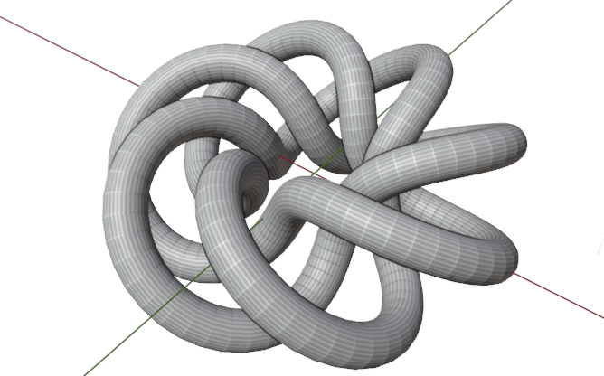

Quick Start#
目标
制作一个参数化环形扭结
获取公式#
一个(p,q)-Torus Knot是通过将一根弦绕圆环p次，在连接其两端之前转q圈得到的，其中p和q互质。
从维基百科获取Torus Knot计算公式：
\( \begin{array}{l} r=\cos (q \phi)+2,\ 其中\ 0<\phi<2 \pi\\ x=r \cos (p \phi) \\ y=r \sin (p \phi) \\ z=-\sin (q \phi) \end{array} \)
第一个节点树#
定义一个节点树，对应上面的公式：
from pynodes import *
sin, cos = Float.sin, Float.cos
@tree
def 计算坐标(Φ: Float, p: Integer, q: Integer):
# 被装饰器装饰的函数名，会被当成节点树的名字
r = cos(q * Φ) + 2
x = r * cos(p * Φ)
y = r * sin(p * Φ)
z = -sin(q * Φ)
return x("x"), y("y"), z("z")
# 如果不需要修改组输出的名字，函数返回可以直接写成：
# return x, y, z
在vscode中，将鼠标放在函数名上，会有类型提示：
(function) def 计算坐标(
Φ: Float,
p: Integer,
q: Integer
) -> tuple[Float, Float, Float]
注意
函数签名中的类型提示不可省略，对于一般的python程序而言，类型提示是可有可无的，就像注释一样，不影响程序运行。但在pynodes中，程序依靠类型提示工作。
由坐标生成曲线#
@tree
def 环形扭结(
p: Integer = 2,
q: Integer = 3,
e: Float = ("结束", 1, 0, 1), # 修剪结束百分比
n: Integer = ("采样", 128) # 总端点数
):
# 创建一个基本圆形曲线节点，把输出端口的几何数据复制给`curve`
curve = CurveCircle(resolution=n)
# 把上面定义的节点树当做函数来调用
x, y, z = 计算坐标(curve.param_factor * 2 * gn.pi, p, q)
# 用获取的坐标来给曲线设置位置，然后创建一个修剪节点，按比例修剪曲线
curve = curve.set_position((x, y, z)).trim_factor(end=e)
# 创建一个frame
with frame("处理首尾相接的问题"):
# with语句作用域内创建的所有节点都会在这个frame内
curve = curve.to_mesh().merge_by_distance().to_curve()
# 上面的操作实际上是让曲线首尾的法线对齐，这样在后面生成网格面时，不会断开
return curve
参数默认值
被装饰器装饰后，函数的参数代表组输入，可以为组输入设置默认值，默认情况下，组输入的名字是参数名，也可以设置为一个元组，元组内的元素分别代表：名字、默认值、最小值和最大值
注意
被装饰器pynodes.tree装饰的函数，无论是在定义时，还是调用时，传给它的参数并不会真的在函数体内部执行，这一点对于python初学者来说，可能很困惑，不过你只需要知道，在装饰器的具体实现中，用了一套偷梁换柱的方法。
由曲线生成网格面#
@tree
def geometry_nodes( # `snake_case`的函数名`geometry_nodes`，会被转化成"Geometry Nodes"作为节点树的名字
p: Integer = 3,
q: Integer = 7,
e: Float = ("结束", 1, 0, 1), # 修剪结束百分比
n: Integer = ("采样", 256), # 总端点数
r: Float = ("Profile Radius", 0.3) # 用来扫描的样板圆的半径
):
# 调用节点树函数
curve = 环形扭结(p, q, e, n)
# 创建节点，将曲线转化成网格面
mesh = curve.to_mesh(CurveCircle(radius=r))
return mesh
# 以下可选，设置平滑和材质
# return mesh.set_shade_smooth().set_material("Material")
提示
从以上的例子可以看出，节点的创建可以由一套链式调用实现，至于有哪些方法可以调用，取决于端口的数据类型，严格类型检查的好处是，可以让IDE自动提示当前对象有哪些方法。
到此，几何节点树创建完成，后面只需要在Blender中给一个对象添加几何节点修改器，节点树设置成Geometry Nodes，便能得到一个环形扭结！

另外pynodes也能进行场景管理。
场景管理（可选）#
from pynodes.scene import *
scene = Tree({
O.cube: {
"location": (0, 0, 0),
Mod.geometry_nodes: {
"node_group": "Geometry Nodes",
"结束": [(1, 0.0), (230, 1.0)], # 第1帧和第230帧设置关键帧
},
},
}).load()
完整代码#
from pynodes import *
@tree
def calculate_coord(p: Integer, q: Integer, ɸ: Float):
δ = SceneTime().seconds * 2
r = cos(q * ɸ + δ) + 2
x = r * cos(p * ɸ + δ)
y = r * sin(p * ɸ + δ)
z = -sin(q * ɸ + δ)
return CombineXYZ(x, y, z)
@tree
def merge_curve(curve: Curve):
return curve.to_mesh().merge_by_distance().to_curve()
@tree
def torus_knot(
resolution: Integer = 200,
p: Integer = 3,
q: Integer = 5,
radius: Float = 0.2,
):
circle = CurveCircle(resolution=resolution)
ɸ = circle.parameter.factor.map_range(0, 1, 0, tau)
position = calculate_coord(p, q, ɸ)
circle.set_position(position=position)
circle.store_named_attribute("factor", circle.parameter.factor)
circle = merge_curve(circle)
with frame("Make curve to mesh"):
mesh = circle.to_mesh(profile_curve=CurveCircle(radius))
mesh.set_material("Torus Knot")
return mesh
@tree
def torus_knot():
"""@Material"""
factor = Shader.attribute(name="factor").fac
color = GradientTexture(vector=factor).color
color = color.mix("#117f0f")
shader = BSDF.Principled("MULTI_GGX", base_color=color)
return shader
from pynodes.scene import *
scene = Tree({
O.cube: {
Mod.geometry_nodes: {
"node_group": "Torus Knot",
},
},
}).load()